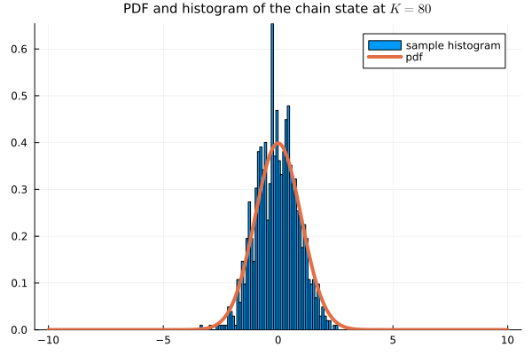
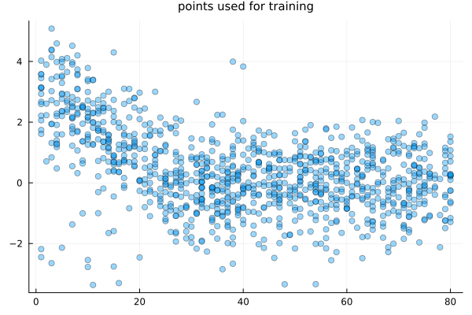
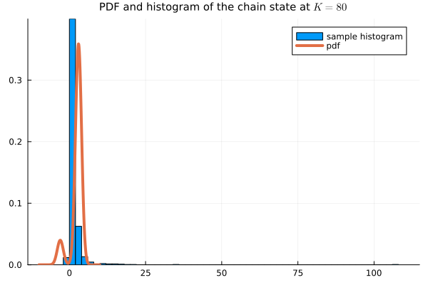
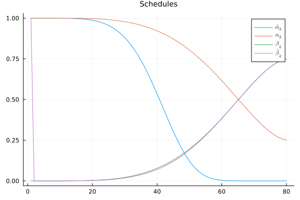
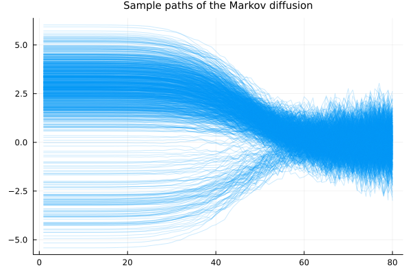
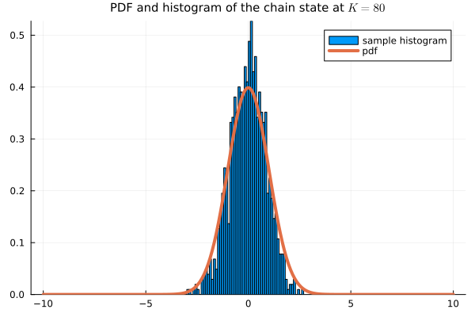

Denoising diffusion probabilistic models
Introduction
Aim
Review denoising diffusion probabilistic models (DDPM) introduced in Sohl-Dickstein, Weiss, Maheswaranathan, Ganguli (2015) and further improved in Ho, Jain, and Abbeel (2020) (and slightly more in Nichol and Dhariwal (2021)).
Motivation
Build a solid foundation on score-based generative diffusion models, for which DDPM, although not initially seen as score-based, is related to, as a discrete analog of the SDE model.
Background
The main idea in Sohl-Dickstein, Weiss, Maheswaranathan, and Ganguli (2015) is to embed the random variable we want to model into a Markov chain and model the whole reverse process of the Markov chain. This is a much more complex task which greatly increases the dimension of the problem, but which yields more stability to both training and generative processes.
The desired random variable, for which we only have access to a sample, is considered as an initial condition to a Markov chain which gradually adds noise to the process so that it converges to a simple and tractable distribution, such as a normal or a binomial distribution. The training process fits a model to the reverse process of the Markov chain (starting back from a relatively large time step, where it will be close to the tractable distribution). Then, the model is used to reverse the process and generate (aproximate) samples of our target distribution from samples of the idealized tractable distribution. The tractable asymptotic distribution of the forward process becomes the initial distribution of the model reverse process, and the (initial) desired target distribution is approximated by the final distribution of the reverse model process.
The original work of Sohl-Dickstein, Weiss, Maheswaranathan, and Ganguli (2015) had great results but the model was a bit complex and training was costly. Ho, Jain, and Abbeel (2020) improved the model by fixing the variance of the model reverse process and simplifying the loss function in a stochastic gradient way, turning the method into an efficient one with great performance.
Further on, Nichol and Dhariwal (2021) showed improvements to the method by changing the linear variance schedule for the forward process proposed in the previous two works into a nonlinear one, which adds noise more gradually in the beginning and at the end. Another improvement was to learn the variance of the model reverse process in a very specific form, which allowed more flexibility in a way that did not hinder the training impractical.
Besides the original articles, another source, which in the beginning helped me understand the main ideas of the foundational articles, was the blog post What are diffusion models? Lil’Log by Lilian Weng (2021).
In a subsequent work, Song, Meng, Ermon (2021) improved the idea and introduced denoising diffusion implicit models, which is based on non-Markovian processes but amounts to the same training strategy and model. The advantage, then, is that sampling is greatly expedited with a non-Markovian reverse process that can sample directly from the tractable distribution. We do not detail this method here, though.
Details of the method
We consider the unknown target distribution to be an initial distribution for a Markov process, so we denote the associated random variable by $\mathbf{X}_0$ in $\mathbb{R}^d,$ $d\in\mathbb{N},$ and its probability density function by $p_0(\mathbf{x}).$ The sample points used for training are denoted by $\{\mathbf{x}_0^n\}_{n=1}^N.$
The idea is to define a forward Markov process that gradually adds noise to the process and drives the distribution towards a tractable distribution such as a standard Gaussian or binomial distribution. This forward process is pretty well defined and straightforward to implement. From the initial sample points we obtain samples of the Markov process. The idea then is to use those sample trajectories to learn the reverse Markov process. With this model of the reverse process, we can build new sample points out of (new) samples of the standard Gaussian distribution, gradually denoising and noisy sample from the tractable distribution towards a sample of the desired distribution.
In the case we consider here and as used in image generation, we add Gaussian noise and drive the system towards the standard Gaussian distribution. Since the reverse process starts with the standard Gaussian distribution and the process just adds Gaussian noises, the approximate reverse process is a Gaussian process. Thus we can just parametrized it by its (time-dependent) mean and variance. For the sake of simplicity of the training process, the variance is actually pre-defined, so we only train the mean of each reverse step. In turn, the mean is reparametrized and what is in fact learned is the noise that needs to be removed to go back to the sample space, granting the name denoising diffusion method. As it turns out, this noise is linked to the score function.
The forward Markov chain
The initial random variable $\mathbf{X}_0$ is evolved in time as a Markov chain $\{\mathbf{X}_k\}_k$ according to
\[ \mathbf{X}_k = \sqrt{1 - \beta_k}\mathbf{X}_{k-1} + \sqrt{\beta_k}\mathbf{Z}_k, \quad \mathbf{Z}_k \sim \mathcal{N}(\mathbf{0}, \mathbf{I}),\]
where $\boldsymbol{\beta}=\{\beta_k\}_{k\in \mathbb{N}}$ is given, with $0 < \beta_k < 1,$ for every $k.$ In practice, we stop at a sufficiently large step $K\in\mathbb{N},$ so that $k=1, 2, \ldots, K.$
The marginal probability density function of the step $k$ conditioned on the step $k-1$ is
\[ p(\mathbf{x}_k|\mathbf{x}_{k-1}) = \mathcal{N}\left(\mathbf{x}; \sqrt{1 - \beta_k}\mathbf{x}_{k-1}, \beta_k\mathbf{I}\right),\]
where $\mathcal{N}(\mathbf{x}; \boldsymbol{\mu}, \beta\mathbf{I})$ is the Gaussian kernel
\[ \mathcal{N}(\mathbf{x}; \boldsymbol{\mu}, \beta\mathbf{I}) = \frac{1}{\sqrt{2\pi\beta^d}}e^{-\frac{1}{2}\frac{\|\mathbf{x} - \boldsymbol{\mu}\|^2}{\beta}},\]
with $\mathcal{N}(\mathbf{x}; \mathbf{0}, \mathbf{I})$ being the standard Gaussian kernel.
By taking the expectation of the recurrence relation of the Markov chain, we see that the means ${\overline{\mathbf{X}}}_k = \mathbb{E}[\mathbf{X}_k]$ evolve according to
\[ {\overline{\mathbf{X}}}_k = \sqrt{1 - \beta_k}{\overline{\mathbf{X}}}_{k-1},\]
With $0 < \beta_k < 1,$ we see that the mean value decays to zero exponentially,
\[ {\overline{\mathbf{X}}}_k \rightarrow 0, \qquad k \rightarrow \infty.\]
Notice that
\[ {\overline{\mathbf{X}}}_k^2 = (1 - \beta_k){\overline{\mathbf{X}}}_{k-1}^2,\]
and
\[ \mathbf{X}_k - {\overline{\mathbf{X}}}_k = \sqrt{1 - \beta_k}\left(\mathbf{X}_{k-1} - {\overline{\mathbf{X}}}_{k-1}\right) + \sqrt{\beta_k}\mathbf{Z}_k.\]
Thus,
\[ \left\|\mathbf{X}_k - {\overline{\mathbf{X}}}_k\right\|^2 = (1 - \beta_k)\left\|\mathbf{X}_{k-1} - {\overline{\mathbf{X}}}_{k-1}\right\|^2 + 2\sqrt{1 - \beta_k}\sqrt{\beta_k}\left(\mathbf{X}_{k-1} - {\overline{\mathbf{X}}}_{k-1}\right)\mathbf{Z}_k + \beta_k \mathbf{Z}_k^2.\]
Taking the expectation, we find that
\[ \mathbb{E}\left[ \left\|\mathbf{X}_k - {\overline{\mathbf{X}}}_k\right\|^2 \right] = (1 - \beta_k) \mathbb{E}\left[ \left\|\mathbf{X}_{k-1} - {\overline{\mathbf{X}}}_{k-1}\right\|^2 \right] + \beta_k.\]
This is precisely a recurrence relation for the variance,
\[ \operatorname{Var}(\mathbf{X}_k) = (1 - \beta_k)\operatorname{Var}(\mathbf{X}_{k-1}) + \beta_k.\]
The parameters $\boldsymbol{\beta}=\{\beta_k\}_k$ are said to be a variance schedule.
At the limit $k\rightarrow \infty,$ with $0 < \beta_k < 1,$ we see that the variance converges exponentially to one,
\[ \operatorname{Var}(\mathbf{X}_k) \rightarrow 1, \qquad k \rightarrow \infty.\]
Thus, $\{\mathbf{X}_k\}_k$ converges to the standard Gaussian distribution.
We can also write
\[ \operatorname{Var}(\mathbf{X}_k) - \operatorname{Var}(\mathbf{X}_{k-1}) = - \beta_k\operatorname{Var}(\mathbf{X}_{k-1}) + \beta_k\]
and
\[ \frac{\operatorname{Var}(\mathbf{X}_k) - \operatorname{Var}(\mathbf{X}_{k-1})}{\beta_k} = -\operatorname{Var}(\mathbf{X}_{k-1}) + 1,\]
so that the variance schedule $\boldsymbol{\beta}=\{\beta_k\}_k$ is also interpreted as step sizes.
The probability density function $p(\mathbf{x}_{0:K}) = p(\mathbf{x}_0, \ldots, \mathbf{x}_K)$ of the Markov chain, where $\mathbf{x}_{0:K} = (\mathbf{x}_0, \dots, \mathbf{x}_K)$ is the portion of a trajectory up to step $K,$ satisfies the conditional marginal relation
\[ p(\mathbf{x}_k|\mathbf{x}_{k-1}) \sim \mathcal{N}(\sqrt{1 - \beta_k}\mathbf{x}_{k-1}, \beta_k),\]
Then,
\[ p(\mathbf{x}_{0:K}|\mathbf{x}_0) = p(\mathbf{x}_{K}|\mathbf{x}_{K-1})\cdots p(\mathbf{x}_1|\mathbf{x}_0) = \prod_{k=1}^{K}p(\mathbf{x}_k|\mathbf{x}_{k-1}).\]
Thus,
\[ p(\mathbf{x}_{0:K}) = \int_{\mathbb{R}^d} \prod_{k=1}^K p(\mathbf{x}_k|\mathbf{x}_{k-1})p_0(\mathbf{x}_0)\;\mathrm{d}\mathbf{x}_0.\]
An approximate distribution for the Markov chain is obtained with the empirical distribution based on samples of the initial random variable $\mathbf{X}_0,$ but we will not use this explicitly.
We can iterate the Markov transition formula and write
\[ \begin{align*} \mathbf{X}_k & = \sqrt{1 - \beta_{k}}\mathbf{X}_{k-1} + \sqrt{\beta_{k}}\mathbf{Z}_{k} \\ & = \sqrt{1 - \beta_{k}}\left( \sqrt{1 - \beta_{k-1}}\mathbf{X}_{k-2} + \sqrt{\beta_{k-1}}\mathbf{Z}_{k-1} \right) + \sqrt{\beta_{k}}\mathbf{Z}_{k} \\ & = \sqrt{1 - \beta_{k}}\sqrt{1 - \beta_{k-1}}\mathbf{X}_{k-2} + \sqrt{1 - \beta_{k}}\sqrt{\beta_{k-1}}\mathbf{Z}_{k-1} + \sqrt{\beta_{k}}\mathbf{Z}_{k} \\ & = \sqrt{1 - \beta_{k}}\sqrt{1 - \beta_{k-1}}\left( \sqrt{1 - \beta_{k-2}}\mathbf{X}_{k-3} + \sqrt{\beta_{k-2}}\mathbf{Z}_{k-2} \right) + \sqrt{1 - \beta_{k}}\sqrt{\beta_{k-1}}\mathbf{Z}_{k-1} + \sqrt{\beta_{k}}\mathbf{Z}_{k} \\ & = \cdots \\ & = \sqrt{1 - \beta_{k}} \cdots \sqrt{1 - \beta_1}\mathbf{X}_0 + \sqrt{1 - \beta_{k}}\cdots \sqrt{1 - \beta_1}\mathbf{Z}_1 + \cdots + \sqrt{1 - \beta_{k}}\sqrt{\beta_{k-1}}\mathbf{Z}_{k-1} + \sqrt{\beta_{k}}\mathbf{Z}_{k}. \end{align*}\]
By defining
\[ \alpha_k = 1 - \beta_k,\]
we rewrite this as
\[ \mathbf{X}_k = \sqrt{\alpha_{k}\cdots \alpha_1}\mathbf{X}_0 + \sqrt{\alpha_{k}\cdots\alpha_2}\sqrt{1 - \alpha_1}\mathbf{Z}_1 + \cdots + \sqrt{\alpha_{k}}\sqrt{1 - \alpha_{k-1}}\mathbf{Z}_{k-1} + \sqrt{1 - \alpha_{k}}\mathbf{Z}_{k}.\]
Since the $\mathbf{Z}_k$ are standard Gaussian random variables, thus with zero mean and variance one, their linear combination is also a Gaussian with zero mean, while the variance is given by the sum of the variances, which ends up simplifying to
\[\alpha_{k}\cdots\alpha_2 (1 - \alpha_1) + \cdots + \alpha_{k}(1 - \alpha_{k-1}) + (1 - \alpha_{k}) = 1 - \alpha_{k}\cdots \alpha_1.\]
Defining now
\[ \bar\alpha_k = \alpha_k\cdots\alpha_1,\]
we obtain
\[ \mathbf{X}_k = \sqrt{\bar{\alpha}_{k}}\mathbf{X}_0 + \sqrt{1 - \bar{\alpha}_{k}}\bar{\mathbf{Z}}_k, \qquad \bar{\mathbf{Z}}_k \sim \mathcal{N}(\mathbf{0}, \mathbf{I}).\]
In other words, this means we can write
\[ p(\mathbf{x}_k|\mathbf{x}_0) = \mathcal{N}(\mathbf{x}_k; \sqrt{\bar{\alpha}_{k}}\mathbf{x}_0, 1 - \bar{\alpha}_{k}).\]
The backward Markov chain
Now we want to be able to revert the Markov chain. But what would be $\mathbf{X}_{k-1}$ given $\mathbf{X}_k = \mathbf{x}_k?$ It turns out that we can also condition it on $\mathbf{X}_0,$ for training, and this leads to a tractable distribution.
In fact, when conditioned on the initial sample, we can use Bayes' rule and write
\[ p\left(\mathbf{x}_{k-1}|\mathbf{x}_k, \mathbf{x}_0\right) = \frac{p\left(\mathbf{x}_k|\mathbf{x}_{k-1}, \mathbf{x}_0\right)p\left(\mathbf{x}_{k-1}|\mathbf{x}_0\right)}{p\left(\mathbf{x}_k|\mathbf{x}_0\right)}\]
Using the Markovian property on the first term of the nominator and ignoring the normalization constant, we know that
\[ p\left(\mathbf{x}_k|\mathbf{x}_{k-1}, \mathbf{x}_0\right) = p\left(\mathbf{x}_k|\mathbf{x}_{k-1}\right) \propto \exp\left(-\frac{1}{2}\frac{\left(\mathbf{x}_k - \sqrt{\alpha_k}\mathbf{x}_{k-1}\right)^2}{\beta_k}\right),\]
while
\[ p\left(\mathbf{x}_{k-1}|\mathbf{x}_0\right) \propto \exp\left(-\frac{1}{2}\frac{\left(\mathbf{x}_{k-1} - \sqrt{\bar{\alpha}_{k-1}}\mathbf{x}_0\right)^2}{1 - \bar{\alpha}_{k-1}}\right),\]
and
\[ p\left(\mathbf{x}_k|\mathbf{x}_0\right) \propto \exp\left(-\frac{1}{2}\frac{\left(\mathbf{x}_k - \sqrt{\bar{\alpha}_k}\mathbf{x}_0\right)^2}{1 - \bar{\alpha}_k}\right).\]
Thus,
\[ p\left(\mathbf{x}_k|\mathbf{x}_{k-1}, \mathbf{x}_0\right) \propto \exp\left( - \frac{1}{2}\left(\frac{\left(\mathbf{x}_k - \sqrt{\alpha_k}\mathbf{x}_{k-1}\right)^2}{\beta_k} + \frac{\left(\mathbf{x}_{k-1} - \sqrt{\bar{\alpha}_{k-1}}\mathbf{x}_0\right)^2}{1 - \bar{\alpha}_{k-1}} - \frac{\left(\mathbf{x}_k - \sqrt{\bar{\alpha}_k}\mathbf{x}_0\right)^2}{1 - \bar{\alpha}_k} \right)\right).\]
We separate the dependence on the variable $\mathbf{x}_{k-1}$ from that on the conditioned variables $\mathbf{x}_k$ and $\mathbf{x}_0.$
\[ \begin{align*} p\left(\mathbf{x}_k|\mathbf{x}_{k-1}, \mathbf{x}_0\right) & \propto \exp\bigg( - \frac{1}{2}\bigg(\frac{\mathbf{x}_k^2 - 2\mathbf{x}_k \sqrt{\alpha_k}\mathbf{x}_{k-1} + \alpha_k\mathbf{x}_{k-1}^2}{\beta_k} \\ & \qquad \qquad \qquad + \frac{\mathbf{x}_{k-1}^2 - 2\mathbf{x}_{k-1}\sqrt{\bar{\alpha}_{k-1}}\mathbf{x}_0 + \bar{\alpha}_{k-1}\mathbf{x}_0^2}{1 - \bar{\alpha}_{k-1}} \\ & \qquad \qquad \qquad \qquad \qquad - \frac{\mathbf{x}_k^2 - \mathbf{x}_k\sqrt{\bar{\alpha}_k}\mathbf{x}_0 + \bar{\alpha}_k\mathbf{x}_0^2}{1 - \bar{\alpha}_k} \bigg)\bigg) \\ & = \exp\bigg( -\frac{1}{2}\bigg( \left( \frac{\alpha_k}{\beta_k} + \frac{1}{1 - \bar{\alpha}_{k-1}}\right)\mathbf{x}_{k-1}^2 \\ & \qquad \qquad \qquad - \left(\frac{2\sqrt{\alpha_k}}{\beta_k}\mathbf{x}_k + \frac{2\sqrt{\bar{\alpha}_{k-1}}}{1 - \bar{\alpha}_{k-1}}\mathbf{x}_0\right)\mathbf{x}_{k-1} \\ & \qquad \qquad \qquad + \left( \frac{1}{\beta_k} - \frac{1}{1 - \bar{\alpha}_k}\right)\mathbf{x}_{k}^2 + \frac{\sqrt{\bar{\alpha}_k}}{1 - \bar{\alpha}_k}\mathbf{x}_k\mathbf{x}_0 \\ & \qquad \qquad \qquad \qquad \qquad + \left( \frac{\bar{\alpha}_{k-1}}{1 - \bar{\alpha}_{k-1}} - \frac{\bar{\alpha}_k}{1 - \bar{\alpha}_k} \right)\mathbf{x}_0^2\bigg)\bigg). \end{align*}\]
Completing the squares, we write
\[ \left( \frac{\alpha_k}{\beta_k} + \frac{1}{1 - \bar{\alpha}_{k-1}}\right)\mathbf{x}_{k-1}^2 - \left(\frac{2\sqrt{\alpha_k}}{\beta_k}\mathbf{x}_k + \frac{2\sqrt{\bar{\alpha}_{k-1}}}{1 - \bar{\alpha}_{k-1}}\mathbf{x}_0\right)\mathbf{x}_{k-1} = \frac{\left(\mathbf{x}_{k-1} - \tilde{\boldsymbol{\mu}}_k\right)^2}{\tilde{\beta}_k} - \frac{{\tilde{\boldsymbol{\mu}}}_k^2}{\tilde \beta_k},\]
with
\[ \begin{align*} \tilde\beta_k & = \frac{1}{\left( \frac{\alpha_k}{\beta_k} + \frac{1}{1 - \bar{\alpha}_{k-1}}\right)}, \\ \frac{\tilde{\boldsymbol{\mu}}_k}{\tilde\beta_k} & = \frac{\sqrt{\alpha_k}}{\beta_k}\mathbf{x}_k + \frac{\sqrt{\bar{\alpha}_{k-1}}}{1 - \bar{\alpha}_{k-1}}\mathbf{x}_0. \end{align*}\]
Using that $\beta_k = 1 - \alpha_k,$ we find the variance of $p\left(\mathbf{x}_k|\mathbf{x}_{k-1}, \mathbf{x}_0\right)$ to be
\[ \tilde\beta_k = \frac{1}{\left( \frac{\alpha_k}{\beta_k} + \frac{1}{1 - \bar{\alpha}_{k-1}}\right)} = \frac{\beta_k(1 - \bar{\alpha}_{k-1})}{\alpha_k(1 - \bar{\alpha}_{k-1}) + \beta_k} = \frac{1 - \bar{\alpha}_{k-1}}{1 - \bar{\alpha}_k}\beta_k,\]
With that, we rewrite the mean of $p\left(\mathbf{x}_k|\mathbf{x}_{k-1}, \mathbf{x}_0\right)$ as
\[ \begin{align*} \tilde{\boldsymbol{\mu}}_k & = \tilde\beta_k\left(\frac{\sqrt{\alpha_k}}{\beta_k}\mathbf{x}_k + \frac{\sqrt{\bar{\alpha}_{k-1}}}{1 - \bar{\alpha}_{k-1}}\mathbf{x}_0\right) = \frac{1 - \bar{\alpha}_{k-1}}{1 - \bar{\alpha}_k}\beta_k\left(\frac{\sqrt{\alpha_k}}{\beta_k}\mathbf{x}_k + \frac{\sqrt{\bar{\alpha}_{k-1}}}{1 - \bar{\alpha}_{k-1}}\mathbf{x}_0\right) \\ & = \frac{(1 - \bar{\alpha}_{k-1})\sqrt{\alpha_k}}{1 - \bar{\alpha}_k}\mathbf{x}_k + \frac{\beta_k\sqrt{\bar{\alpha}_{k-1}}}{1 - \bar{\alpha}_k}\mathbf{x}_0. \end{align*}\]
Then, we obtain
\[ \begin{align*} \frac{{\tilde{\boldsymbol{\mu}}}_k^2}{\tilde \beta_k} & = \frac{1 - \bar{\alpha}_k}{(1 - \bar{\alpha}_{k-1})\beta_k}\left(\frac{(1 - \bar{\alpha}_{k-1})\sqrt{\alpha_k}}{1 - \bar{\alpha}_k}\mathbf{x}_k + \frac{\beta_k\sqrt{\bar{\alpha}_{k-1}}}{1 - \bar{\alpha}_k}\mathbf{x}_0\right) \\ & = \frac{\sqrt{\alpha_k}}{\beta_k}\mathbf{x}_k + \frac{\sqrt{\bar{\alpha}_{k-1}}}{(1 - \bar{\alpha}_{k-1})}\mathbf{x}_0. \end{align*}\]
Thus, we write
\[ p\left(\mathbf{x}_k|\mathbf{x}_{k-1}, \mathbf{x}_0\right) \propto \exp\bigg( -\frac{1}{2}\bigg( \frac{\left(\mathbf{x}_{k-1} - \tilde{\boldsymbol{\mu}}_k\right)^2}{\tilde{\beta}_k} + \tilde\gamma_k \bigg)\bigg),\]
where
\[ \begin{align*} \tilde{\boldsymbol{\mu}}_k & = \tilde{\boldsymbol{\mu}}_k(\mathbf{x}_k, \mathbf{x}_0) = \frac{(1 - \bar{\alpha}_{k-1})\sqrt{\alpha_k}}{1 - \bar{\alpha}_k}\mathbf{x}_k + \frac{\beta_k\sqrt{\bar{\alpha}_{k-1}}}{1 - \bar{\alpha}_k}\mathbf{x}_0, \\ \tilde\beta_k & = \frac{1 - \bar{\alpha}_{k-1}}{1 - \bar{\alpha}_k}\beta_k, \\ \tilde\gamma_k & = \tilde\gamma_k(\mathbf{x}_k, \mathbf{x}_0) = \left( \frac{1}{\beta_k} - \frac{1}{1 - \bar{\alpha}_k}\right)\mathbf{x}_{k}^2 + \frac{\sqrt{\bar{\alpha}_k}}{1 - \bar{\alpha}_k}\mathbf{x}_k\mathbf{x}_0 \\ & \qquad \qquad \qquad \qquad + \left( \frac{\bar{\alpha}_{k-1}}{1 - \bar{\alpha}_{k-1}} - \frac{\bar{\alpha}_k}{1 - \bar{\alpha}_k} \right)\mathbf{x}_0^2 - \frac{{\tilde{\boldsymbol{\mu}}}_k^2}{\tilde \beta_k}. \end{align*}\]
Hence, we find that
\[ p\left(\mathbf{x}_k|\mathbf{x}_{k-1}, \mathbf{x}_0\right) = \mathcal{N}\left(\mathbf{x}_k; \tilde{\boldsymbol{\mu}}_k, \tilde \beta_k\mathbf{I}\right).\]
With that, we can write
\[ p\left(\mathbf{x}_k|\mathbf{x}_{k-1}\right) = \int_{\mathbb{R}^d} p\left(\mathbf{x}_k|\mathbf{x}_{k-1},\mathbf{x}_0\right)p(\mathbf{x}_0)\;\mathrm{d}\mathbf{x}_0.\]
Notice we can write the (initial) target distribution as
\[ p_0(\mathbf{x}_0) = p(\mathbf{x}_0) = \int_{(\mathbf{R}^d)^{K}} p(\mathbf{x}_{0:K}) \;\mathrm{d}\mathbf{x}_{1:K},\]
and then
\[ p(\mathbf{x}_{0:K}) = \int_{\mathbb{R}^d} p(\mathbf{x}_{0:K}|\mathbf{x}_0)\;\mathrm{d}\mathbf{x}_0,\]
with
\[ p(\mathbf{x}_{0:K}|\mathbf{x}_0) = p(\mathbf{x}_0|\mathbf{x}_1, \mathbf{x}_0)p(\mathbf{x}_1|\mathbf{x}_2, \mathbf{x}_0)\cdots p(\mathbf{x}_{K-1}|\mathbf{x}_K, \mathbf{x}_0),\]
and
\[ p(\mathbf{x}_{k-1}|\mathbf{x}_k, \mathbf{x}_0) = \mathcal{N}(\mathbf{x}_{k-1}; \tilde{\boldsymbol{\mu}}_k(\mathbf{x}_k, \mathbf{x}_0), \tilde \beta_k\mathbf{I}).\]
Another way of writing this reverse process is through the recurrence relation
\[ \mathbf{X}_{k-1} = \tilde{\boldsymbol{\mu}}_k(\mathbf{X}_k, \mathbf{X}_0) + \tilde\beta_k\mathbf{Z}_k, \quad \mathbf{Z}_k \sim \mathcal{N}(\mathbf{0}, \mathbf{I}).\]
Reparametrization trick
As mentioned earlier, conditioning $p(\mathbf{x}_{k-1}|\mathbf{x}_k, \mathbf{x}_0)$ on $\mathbf{x}_0$ is good for training, but for not for sampling. Thus we reparametrize the relation and write $\tilde{\boldsymbol{\mu}}_k(\mathbf{X}_k, \mathbf{X}_0)$ in terms of $\mathbf{X}_k$ and the added noise term. Then we model the added noise, as we will see.
From the relation $\mathbf{X}_k = \sqrt{\bar{\alpha}_{k}}\mathbf{X}_0 + \sqrt{1 - \bar{\alpha}_{k}}\bar{\mathbf{Z}}_k,$ where $\bar{\mathbf{Z}}_k \sim \mathcal{N}(\mathbf{0}, \mathbf{I}),$ we find that
\[ \mathbf{x}_k = \sqrt{\bar{\alpha}_{k}}\mathbf{x}_0 + \sqrt{1 - \bar{\alpha}_{k}}\bar{\boldsymbol{\epsilon}}_k,\]
for a sample $\boldsymbol{\epsilon}_k$ of the standard normal distribution. We use that to rewrite $\tilde{\boldsymbol{\mu}}_k$ in terms of $\mathbf{x}_0$ and $\boldsymbol{\epsilon}_k,$
\[ \begin{align*} \tilde{\boldsymbol{\mu}}_k & = \frac{(1 - \bar{\alpha}_{k-1})\sqrt{\alpha_k}}{1 - \bar{\alpha}_k}\mathbf{x}_k + \frac{\beta_k\sqrt{\bar{\alpha}_{k-1}}}{1 - \bar{\alpha}_k}\mathbf{x}_0 \\ & = \frac{(1 - \bar{\alpha}_{k-1})\sqrt{\alpha_k}}{1 - \bar{\alpha}_k}\left(\sqrt{\bar{\alpha}_{k}}\mathbf{x}_0 + \sqrt{1 - \bar{\alpha}_{k}}\bar{\boldsymbol{\epsilon}}_k\right) + \frac{\beta_k\sqrt{\bar{\alpha}_{k-1}}}{1 - \bar{\alpha}_k}\mathbf{x}_0 \\ & = \frac{(1 - \bar{\alpha}_{k-1})\sqrt{\alpha_k}\sqrt{\bar{\alpha}_{k}} + \beta_k\sqrt{\bar{\alpha}_{k-1}}}{1 - \bar{\alpha}_k}\mathbf{x}_0 + \frac{(1 - \bar{\alpha}_{k-1})\sqrt{\alpha_k}}{1 - \bar{\alpha}_k}\sqrt{1 - \bar{\alpha}_{k}}\bar{\boldsymbol{\epsilon}}_k \\ & = \frac{((1 - \bar{\alpha}_{k-1})\alpha_k + \beta_k)\sqrt{\bar{\alpha}_{k-1}}}{1 - \bar{\alpha}_k}\mathbf{x}_0 + \frac{(1 - \bar{\alpha}_{k-1})\alpha_k}{\sqrt{1 - \bar{\alpha}_k}\sqrt{\alpha_k}}\bar{\boldsymbol{\epsilon}}_k \\ & = \frac{(\alpha_k - \bar{\alpha}_k + \beta_k)\sqrt{\bar{\alpha}_{k-1}}}{1 - \bar{\alpha}_k}\mathbf{x}_0 + \frac{(1 - \bar{\alpha}_{k-1})\alpha_k}{\sqrt{1 - \bar{\alpha}_k}\sqrt{\alpha_k}}\bar{\boldsymbol{\epsilon}}_k \\ \end{align*}\]
Using that $\beta_k = 1 - \alpha_k,$ we find
\[ \begin{align*} \tilde{\boldsymbol{\mu}}_k & = \frac{(1 - \bar{\alpha}_k)\sqrt{\bar{\alpha}_{k-1}}}{1 - \bar{\alpha}_k}\mathbf{x}_0 + \frac{\alpha_k - \bar{\alpha}_k}{(1 - \bar{\alpha}_k)\sqrt{\alpha_k}}\sqrt{1 - \bar{\alpha}_{k}}\bar{\boldsymbol{\epsilon}}_k \\ & = \sqrt{\bar{\alpha}_{k-1}}\mathbf{x}_0 + \frac{\alpha_k - \bar{\alpha}_k}{(1 - \bar{\alpha}_k)\sqrt{\alpha_k}}\sqrt{1 - \bar{\alpha}_{k}}\bar{\boldsymbol{\epsilon}}_k \\ \end{align*}\]
We can also rewrite $\mathbf{x}_0$ in terms of $\mathbf{x}_k,$ i.e.
\[ \mathbf{x}_0 = \frac{1}{\sqrt{\bar{\alpha}_{k}}}\mathbf{x}_k - \frac{\sqrt{1 - \bar{\alpha}_{k}}}{\sqrt{\bar{\alpha}_{k}}}\bar{\boldsymbol{\epsilon}}_k.\]
Plugging this into the formula for the mean $\tilde{\boldsymbol{\mu}}_k,$ we obtain
\[ \begin{align*} \tilde{\boldsymbol{\mu}}_k & = \frac{(1 - \bar{\alpha}_{k-1})\sqrt{\alpha_k}}{1 - \bar{\alpha}_k}\mathbf{x}_k + \frac{\beta_k\sqrt{\bar{\alpha}_{k-1}}}{1 - \bar{\alpha}_k}\left(\frac{1}{\sqrt{\bar{\alpha}_{k}}}\mathbf{x}_k - \frac{\sqrt{1 - \bar{\alpha}_{k}}}{\sqrt{\bar{\alpha}_{k}}}\bar{\boldsymbol{\epsilon}}_k\right) \\ & = \left(\frac{(1 - \bar{\alpha}_{k-1})\sqrt{\alpha_k}}{1 - \bar{\alpha}_k} + \frac{\beta_k\sqrt{\bar{\alpha}_{k-1}}}{(1 - \bar{\alpha}_k)\sqrt{\bar\alpha_k}}\right)\mathbf{x}_k - \frac{\beta_k\sqrt{\bar{\alpha}_{k-1}}}{1 - \bar{\alpha}_k}\frac{\sqrt{1 - \bar{\alpha}_{k}}}{\sqrt{\bar{\alpha}_{k}}}\bar{\boldsymbol{\epsilon}}_k \\ & = \left(\frac{(1 - \bar{\alpha}_{k-1})\sqrt{\alpha_k}}{1 - \bar{\alpha}_k} + \frac{\beta_k}{(1 - \bar{\alpha}_k)\sqrt{\alpha_k}}\right)\mathbf{x}_k - \frac{\beta_k}{\sqrt{1 - \bar{\alpha}_{k}}\sqrt{\alpha_{k}}}\bar{\boldsymbol{\epsilon}}_k \\ & = \left(\frac{(1 - \bar{\alpha}_{k-1})\alpha_k + \beta_k}{(1 - \bar{\alpha}_k)\sqrt{\alpha_k}}\right)\mathbf{x}_k - \frac{\beta_k}{\sqrt{1 - \bar{\alpha}_{k}}\sqrt{\alpha_{k}}}\bar{\boldsymbol{\epsilon}}_k \\ & = \left(\frac{\alpha_k - \bar{\alpha}_k + \beta_k}{(1 - \bar{\alpha}_k)\sqrt{\alpha_k}}\right)\mathbf{x}_k - \frac{\beta_k}{\sqrt{1 - \bar{\alpha}_{k}}\sqrt{\alpha_{k}}}\bar{\boldsymbol{\epsilon}}_k \end{align*}\]
Using, again, that $\beta_k = 1 - \alpha_k,$ we find
\[ \tilde{\boldsymbol{\mu}}_k = \frac{1}{\sqrt{\alpha_k}}\mathbf{x}_k - \frac{1-\alpha_k}{\sqrt{1 - \bar{\alpha}_{k}}\sqrt{\alpha_{k}}}\bar{\boldsymbol{\epsilon}}_k.\]
In this way, we reparametrize the mean in terms of $\mathbf{x}_k$ and $\bar{\boldsymbol{\epsilon}}_k,$ instead of $\mathbf{x}_k$ and $\mathbf{x}_0.$ This is the form that serves as an inspiration to the model of the reverse process. With that, the reparametrization of $\mathbf{x}_k$ in terms of $\mathbf{x}_0$ and $\bar{\boldsymbol{\epsilon}}_k$ is then used for training, as we will see in what follows.
The model
We want to approximate the distribution of the Markov process with some model pdf $p_{\boldsymbol{\theta}}(\mathbf{x}_{0:K}),$ which yields an approximation of the target pdf $p_0(\mathbf{x}_0)$ via
\[ p_{\boldsymbol{\theta}}(\mathbf{x}_{0}) = \int_{(\mathbf{R}^d)^{K}} p_{\boldsymbol{\theta}}(\mathbf{x}_{0:K}) \;\mathrm{d}\mathbf{x}_{1:K}.\]
One of the key points in the forward Markov chain is that the limit distribution of $\mathbf{X}_k$ as $k\rightarrow \infty$ is a standard normal distribution. Thus, for our model, we assume that the distribution at step $K,$ with $K$ taken relatively large, is precisely a standard normal distribution. With that, the model is written as
\[ p_{\boldsymbol{\theta}}(\mathbf{x}_{0:K}) = \int_{\mathbb{R}^d} p_{\boldsymbol{\theta}}(\mathbf{x}_{0:K}|\mathbf{x}_K)p_{\boldsymbol{\theta}}(\mathbf{x}_K)\;\mathrm{d}\mathbf{x}_K,\]
with
\[ p_{\boldsymbol{\theta}}(\mathbf{x}_K) = \mathcal{N}(\mathbf{x}_K; \mathbf{0}, \mathbf{I}).\]
We also have
\[ p_{\boldsymbol{\theta}}(\mathbf{x}_{0:K}|\mathbf{x}_K) = p_{\boldsymbol{\theta}}(\mathbf{x}_0|\mathbf{x}_1)p_{\boldsymbol{\theta}}(\mathbf{x}_1|\mathbf{x}_2)\cdots p_{\boldsymbol{\theta}}(\mathbf{x}_{K-1}|\mathbf{x}_K).\]
As in the reverse Markov process, we assume each $p_{\boldsymbol{\theta}}(\mathbf{x}_{k-1}|\mathbf{x}_k)$ is a Gaussian distribution. Hence, each conditional distribution is parametrized by its mean and its variance,
\[ p_{\boldsymbol{\theta}}(\mathbf{x}_{k-1}|\mathbf{x}_k) = \mathcal{N}(\mathbf{x}_{k-1}; \boldsymbol{\mu}_{\boldsymbol{\theta}}(\mathbf{x}_k, k), \beta_{\boldsymbol{\theta}}(\mathbf{x}_k, k)).\]
Sohl-Dickstein, Weiss, Maheswaranathan, Ganguli (2015) modeled the mean and the covariance kernel of each reverse step and actually used a modified distribution multiplying it by a function $r(\mathbf{x}_k)$, but we do not consider this and go on model implemented in Ho, Jain, and Abbeel (2020).
Indeed, due to the reparametrization trick used in the target Markov chain, we also reparametrize $\boldsymbol{\mu}_{\boldsymbol{\theta}}(\mathbf{x}_k, k)$ in a similar way:
\[ \boldsymbol{\mu}_{\boldsymbol{\theta}}(\mathbf{x}_k, k) = \frac{1}{\sqrt{\alpha_k}}\mathbf{x}_k - \frac{1-\alpha_k}{\sqrt{1 - \bar{\alpha}_{k}}\sqrt{\alpha_{k}}}\boldsymbol{\epsilon}_{\boldsymbol{\theta}}(\mathbf{x}_k, k).\]
Although $\beta_{\boldsymbol{\theta}}(\mathbf{x}_k, k)$ are also learnable, they are set to constants, for the sake of simplicity of the loss function:
\[ \beta_{\boldsymbol{\theta}}(\mathbf{x}_k, k) = \sigma_k,\]
for pre-determined constants $\sigma_k,$ $k=1, \ldots, K.$ Ho, Jain, and Abbeel (2020) experimented with some choices and found out that choosing $\sigma_k^2 = \beta_k$ or $\sigma_k^2 = \tilde\beta_k$ yields about the same results. They correspond to opposite extremes, with $\sigma_k^2 = \beta_k$ being optimal for $\mathbf{X}_0 \sim \mathcal{N}(\mathbf{0}, \mathbf{I})$, while $\sigma_k^2 = \tilde\beta_k$ being optimal for a delta distribution $\mathbf{X}_0 = \mathbf{x}_0$, for a given deterministic $\mathbf{x}_0$.
In this way, the modeled reverse process, once $\boldsymbol{\epsilon}_{\boldsymbol{\theta}}(\mathbf{x}_k, k)$ is properly trained, is given by
\[ \mathbf{X}_{k-1} = \frac{1}{\sqrt{\alpha_k}}\mathbf{X}_k - \frac{1-\alpha_k}{\sqrt{1 - \bar{\alpha}_{k}}\sqrt{\alpha_{k}}}\boldsymbol{\epsilon}_{\boldsymbol{\theta}}(\mathbf{X}_k, k) + \sigma_k \mathbf{Z}_k, \qquad \mathbf{Z}_k \sim \mathcal{N}(\mathbf{0}, \mathbf{I}).\]
Actually, for the final step $p_{\boldsymbol{\theta}}(\mathbf{x}_0|\mathbf{x}_1)$ of the reverse process, Sohl-Dickstein, Weiss, Maheswaranathan, Ganguli (2015) bases it on the first step of the forward trajectory, in order to "remove the edge effect" (see Appendix B.2):
\[ p_{\boldsymbol{\theta}}(\mathbf{x}_0|\mathbf{x}_1) = p(\mathbf{x}_1, \mathbf{x}_0)\frac{\mathcal{N}(\mathbf{x}_0; \mathbf{0}, \mathbf{I})}{\mathcal{N}(\mathbf{x}_1; \mathbf{0}, \mathbf{I})}.\]
In Ho, Jain, and Abbeel (2020), however, this is setup differently, being truncated to the support of the original distribution, which is assumed to represent an image, with data in $\{0, 1, \ldots, 255\}$ scaled to $[-1, 1],$ i.e. each coordinate $x_i,$ $i=1, \ldots, d,$ in $\{(a - 127.5) / 127.5; \;a=0, \ldots, 255\},$ so that
\[ p_{\boldsymbol{\theta}}(\mathbf{x}_0|\mathbf{x}_1) = \prod_{i=1}^d \int_{\delta_-(x_{0i})}^{\delta_+(x_{0i})} \mathcal{N}(x_i; \mu_{\boldsymbol{\theta}, i}(\mathbf{x}_1, 1), \sigma_1^2)\; \mathbf{x}_i,\]
with
\[ \delta_-(x_{0i}) = \begin{cases} -\infty, & x = -1, \\ x - 1/255, & x > -11, \end{cases} \qquad \delta_+(x_{0i}) = \begin{cases} \infty, & x = 1, \\ x + 1/255, & x < 1. \end{cases}\]
In any case, our model is completely defined by $\boldsymbol{\epsilon}_{\boldsymbol{\theta}}(\mathbf{x}_k, k),$ $k=1, \ldots, K,$ the parameters $\sigma_1, \ldots, \sigma_K,$ and the (final) conditional distribution $p_{\boldsymbol{\theta}}(\mathbf{x}_0|\mathbf{x}_1).$
The loss function
Now we need a loss function to train the parametrization $\boldsymbol{\epsilon}_{\boldsymbol{\theta}}(\mathbf{x}_k, k)$ of our model.
The cross-entropy loss
Ideally, one would maximize the (log-)likelihood of the model, by minimizing the cross-entropy loss function
\[ L_{\mathrm{CE}}(\boldsymbol{\theta}) = H(p_0, p_{\boldsymbol{\theta}}) = \mathbb{E}_{p_0}\left[-\log p_{\boldsymbol{\theta}}(\mathbf{x}_0)\right] = -\int_{\mathbb{R}^d} p_0(\mathbf{x}_0)\log p_{\boldsymbol{\theta}}(\mathbf{x}_0)\;\mathrm{d}\mathbf{x}_0 \approx -\frac{1}{N}\sum_{n=1}^N \log p_{\boldsymbol{\theta}}(\mathbf{x}_0^n).\]
But $p_{\boldsymbol{\theta}}(\mathbf{x}_{0}),$ given as
\[ p_{\boldsymbol{\theta}}(\mathbf{x}_{0}) = \int_{(\mathbf{R}^d)^{K}} p_{\boldsymbol{\theta}}(\mathbf{x}_{0:K}) \;\mathrm{d}\mathbf{x}_{1:K},\]
is intractable.
The variational lower bound loss
We substitute for $p_{\boldsymbol{\theta}}(\mathbf{x}_{0})$ and multiply and divide by $p(\mathbf{x}_{1:K}|\mathbf{x}_0)$ to find
\[ \begin{align*} L_{\mathrm{CE}}(\boldsymbol{\theta}) & = \mathbb{E}_{p_0}\left[-\log p_{\boldsymbol{\theta}}(\mathbf{x}_0)\right] \\ & = -\int_{\mathbb{R}^d} p_0(\mathbf{x}_0)\log p_{\boldsymbol{\theta}}(\mathbf{x}_0)\;\mathrm{d}\mathbf{x}_0 \\ & = -\int_{\mathbb{R}^d} p_0(\mathbf{x}_0)\log \left(\int_{(\mathbf{R}^d)^{K}} p_{\boldsymbol{\theta}}(\mathbf{x}_{0:K}) \;\mathrm{d}\mathbf{x}_{1:K}\right)\mathrm{d}\mathbf{x}_0 \\ & = -\int_{\mathbb{R}^d} p_0(\mathbf{x}_0)\log \left(\int_{(\mathbf{R}^d)^{K}} p(\mathbf{x}_{1:K}|\mathbf{x}_0) \frac{p_{\boldsymbol{\theta}}(\mathbf{x}_{0:K})}{p(\mathbf{x}_{1:K}|\mathbf{x}_0)} \;\mathrm{d}\mathbf{x}_{1:K}\right)\mathrm{d}\mathbf{x}_0. \end{align*}\]
Now we use Jensen's inequality to obtain the following upper bound for the cross-entropy loss,
\[ \begin{align*} L_{\mathrm{CE}}(\boldsymbol{\theta}) & \leq -\int_{\mathbb{R}^d} p_0(\mathbf{x}_0)\int_{(\mathbf{R}^d)^{K}} p(\mathbf{x}_{1:K}|\mathbf{x}_0) \log \left(\frac{p_{\boldsymbol{\theta}}(\mathbf{x}_{0:K})}{p(\mathbf{x}_{1:K}|\mathbf{x}_0)} \right)\mathrm{d}\mathbf{x}_{1:K}\,\mathrm{d}\mathbf{x}_0 \\ & = -\int_{(\mathbf{R}^d)^{K+1}} p(\mathbf{x}_{0:K}) \log \left(\frac{p_{\boldsymbol{\theta}}(\mathbf{x}_{0:K})}{p(\mathbf{x}_{1:K}|\mathbf{x}_0)} \right)\mathrm{d}\mathbf{x}_{0:K} \\ & = \int_{(\mathbf{R}^d)^{K+1}} p(\mathbf{x}_{0:K}) \log \left(\frac{p(\mathbf{x}_{1:K}|\mathbf{x}_0)}{p_{\boldsymbol{\theta}}(\mathbf{x}_{0:K})} \right)\mathrm{d}\mathbf{x}_{0:K} \end{align*}\]
This expression defines what is called the variational lower bound loss
\[ L_{\mathrm{VLB}}(\boldsymbol{\theta}) = \mathbb{E}_{p(\mathbf{x}_{0:K})}\left[ \log \frac{p(\mathbf{x}_{1:K}|\mathbf{x}_0)}{p_{\boldsymbol{\theta}}(\mathbf{x}_{0:K})} \right] = \int_{(\mathbf{R}^d)^{K+1}} p(\mathbf{x}_{0:K}) \log \left(\frac{p(\mathbf{x}_{1:K}|\mathbf{x}_0)}{p_{\boldsymbol{\theta}}(\mathbf{x}_{0:K})} \right)\mathrm{d}\mathbf{x}_{0:K}.\]
Sohl-Dickstein, Weiss, Maheswaranathan, Ganguli (2015) manipulated this loss to a more tractable form as follows
\[ \begin{align*} L_{\mathrm{VLB}}(\boldsymbol{\theta}) & = \mathbb{E}_{p(\mathbf{x}_{0:K})}\left[ \log \frac{p(\mathbf{x}_{1:K}|\mathbf{x}_0)}{p_{\boldsymbol{\theta}}(\mathbf{x}_{0:K})} \right] \\ & = \mathbb{E}_{p(\mathbf{x}_{0:K})}\left[ \log \frac{\prod_{k=1}^K p(\mathbf{x}_k|\mathbf{x}_{k-1})}{p_{\boldsymbol{\theta}}(\mathbf{x}_K)\prod_{k=1}^K p_{\boldsymbol{\theta}}(\mathbf{x}_{k-1}|\mathbf{x}_k)} \right] \\ & = \mathbb{E}_{p(\mathbf{x}_{0:K})}\left[ -\log p_{\boldsymbol{\theta}}(\mathbf{x}_K) + \log \prod_{k=1}^K \frac{p(\mathbf{x}_k|\mathbf{x}_{k-1})}{p_{\boldsymbol{\theta}}(\mathbf{x}_{k-1}|\mathbf{x}_k)} \right] \\ & = \mathbb{E}_{p(\mathbf{x}_{0:K})}\left[ -\log p_{\boldsymbol{\theta}}(\mathbf{x}_K) + \sum_{k=1}^K \log \frac{p(\mathbf{x}_k|\mathbf{x}_{k-1})}{p_{\boldsymbol{\theta}}(\mathbf{x}_{k-1}|\mathbf{x}_k)} \right] \\ & = \mathbb{E}_{p(\mathbf{x}_{0:K})}\left[ -\log p_{\boldsymbol{\theta}}(\mathbf{x}_K) + \log \frac{p(\mathbf{x}_1|\mathbf{x}_0)}{p_{\boldsymbol{\theta}}(\mathbf{x}_0|\mathbf{x}_1)} + \sum_{k=2}^K \log \frac{p(\mathbf{x}_k|\mathbf{x}_{k-1})}{p_{\boldsymbol{\theta}}(\mathbf{x}_{k-1}|\mathbf{x}_k)} \right]. \end{align*}\]
From Bayes' rule and the Markovian property of $\{X_k\}_k$ (as we derived earlier for $p\left(\mathbf{x}_{k-1}|\mathbf{x}_k, \mathbf{x}_0\right)$), we have
\[ p\left(\mathbf{x}_{k-1}|\mathbf{x}_k, \mathbf{x}_0\right) = \frac{p\left(\mathbf{x}_k|\mathbf{x}_{k-1}, \mathbf{x}_0\right)p\left(\mathbf{x}_{k-1}|\mathbf{x}_0\right)}{p\left(\mathbf{x}_k|\mathbf{x}_0\right)} = \frac{p\left(\mathbf{x}_k|\mathbf{x}_{k-1}\right)p\left(\mathbf{x}_{k-1}|\mathbf{x}_0\right)}{p\left(\mathbf{x}_k|\mathbf{x}_0\right)},\]
which we can write as
\[ p(\mathbf{x}_k|\mathbf{x}_{k-1}) = \frac{p(\mathbf{x}_{k-1}|\mathbf{x}_k, \mathbf{x}_0)p(\mathbf{x}_k|\mathbf{x}_0)}{p(\mathbf{x}_{k-1}|\mathbf{x}_0)}.\]
Hence,
\[ \begin{align*} L_{\mathrm{VLB}}(\boldsymbol{\theta}) & = \mathbb{E}_{p(\mathbf{x}_{0:K})}\left[ -\log p_{\boldsymbol{\theta}}(\mathbf{x}_K) + \log \frac{p(\mathbf{x}_1|\mathbf{x}_0)}{p_{\boldsymbol{\theta}}(\mathbf{x}_0|\mathbf{x}_1)} + \sum_{k=2}^K \log \frac{p(\mathbf{x}_k|\mathbf{x}_{k-1})}{p_{\boldsymbol{\theta}}(\mathbf{x}_{k-1}|\mathbf{x}_k)} \right] \\ & = \mathbb{E}_{p(\mathbf{x}_{0:K})}\left[ -\log p_{\boldsymbol{\theta}}(\mathbf{x}_K) + \log \frac{p(\mathbf{x}_1|\mathbf{x}_0)}{p_{\boldsymbol{\theta}}(\mathbf{x}_0|\mathbf{x}_1)} + \sum_{k=2}^K \log \frac{p(\mathbf{x}_{k-1}|\mathbf{x}_k, \mathbf{x}_0)}{p_{\boldsymbol{\theta}}(\mathbf{x}_{k-1}|\mathbf{x}_k)} \frac{p(\mathbf{x}_k|\mathbf{x}_0)}{p(\mathbf{x}_{k-1}|\mathbf{x}_0)} \right] \\ & = \mathbb{E}_{p(\mathbf{x}_{0:K})}\left[ -\log p_{\boldsymbol{\theta}}(\mathbf{x}_K) + \log \frac{p(\mathbf{x}_1|\mathbf{x}_0)}{p_{\boldsymbol{\theta}}(\mathbf{x}_0|\mathbf{x}_1)} + \sum_{k=2}^K \log \frac{p(\mathbf{x}_{k-1}|\mathbf{x}_k, \mathbf{x}_0)}{p_{\boldsymbol{\theta}}(\mathbf{x}_{k-1}|\mathbf{x}_k)} + \sum_{k=2}^K \log \frac{p(\mathbf{x}_k|\mathbf{x}_0)}{p(\mathbf{x}_{k-1}|\mathbf{x}_0)} \right] \\ & = \mathbb{E}_{p(\mathbf{x}_{0:K})}\left[ -\log p_{\boldsymbol{\theta}}(\mathbf{x}_K) + \log \frac{p(\mathbf{x}_1|\mathbf{x}_0)}{p_{\boldsymbol{\theta}}(\mathbf{x}_0|\mathbf{x}_1)} + \sum_{k=2}^K \log \frac{p(\mathbf{x}_{k-1}|\mathbf{x}_k, \mathbf{x}_0)}{p_{\boldsymbol{\theta}}(\mathbf{x}_{k-1}|\mathbf{x}_k)} + \log \prod_{k=2}^K \frac{p(\mathbf{x}_k|\mathbf{x}_0)}{p(\mathbf{x}_{k-1}|\mathbf{x}_0)} \right] \\ & = \mathbb{E}_{p(\mathbf{x}_{0:K})}\left[ -\log p_{\boldsymbol{\theta}}(\mathbf{x}_K) + \log \frac{p(\mathbf{x}_1|\mathbf{x}_0)}{p_{\boldsymbol{\theta}}(\mathbf{x}_0|\mathbf{x}_1)} + \sum_{k=2}^K \log \frac{p(\mathbf{x}_{k-1}|\mathbf{x}_k, \mathbf{x}_0)}{p_{\boldsymbol{\theta}}(\mathbf{x}_{k-1}|\mathbf{x}_k)} + \log \frac{p(\mathbf{x}_K|\mathbf{x}_0)}{p(\mathbf{x}_1|\mathbf{x}_0)} \right]. \end{align*}\]
The first, second and fourth terms combine to yield
\[ \begin{align*} -\log p_{\boldsymbol{\theta}}(\mathbf{x}_K) + \log \frac{p(\mathbf{x}_1|\mathbf{x}_0)}{p_{\boldsymbol{\theta}}(\mathbf{x}_0|\mathbf{x}_1)} + \log \frac{p(\mathbf{x}_K|\mathbf{x}_0)}{p(\mathbf{x}_1|\mathbf{x}_0)} & = -\log p_{\boldsymbol{\theta}}(\mathbf{x}_K) + \log \frac{p(\mathbf{x}_K|\mathbf{x}_0)}{p_{\boldsymbol{\theta}}(\mathbf{x}_0|\mathbf{x}_1)} \\ & = \log \frac{p(\mathbf{x}_K|\mathbf{x}_0)}{p_{\boldsymbol{\theta}}(\mathbf{x}_K)} - \log p_{\boldsymbol{\theta}}(\mathbf{x}_0|\mathbf{x}_1) \end{align*}\]
Thus,
\[ \begin{align*} L_{\mathrm{VLB}}(\boldsymbol{\theta}) & = \mathbb{E}_{p(\mathbf{x}_{0:K})}\left[ - \log p_{\boldsymbol{\theta}}(\mathbf{x}_0|\mathbf{x}_1) + \sum_{k=2}^K \log \frac{p(\mathbf{x}_{k-1}|\mathbf{x}_k, \mathbf{x}_0)}{p_{\boldsymbol{\theta}}(\mathbf{x}_{k-1}|\mathbf{x}_k)} + \log \frac{p(\mathbf{x}_K|\mathbf{x}_0)}{p_{\boldsymbol{\theta}}(\mathbf{x}_K)} \right]. \end{align*}\]
This can be written as
\[ L_{\mathrm{VLB}}(\boldsymbol{\theta}) = L_{\mathrm{VLB}, 0}(\boldsymbol{\theta}) + L_{\mathrm{VLB}, 1}(\boldsymbol{\theta}) + \cdots + L_{\mathrm{VLB}, K}(\boldsymbol{\theta}),\]
where
\[ \begin{align*} L_{\mathrm{VLB, 0}}(\boldsymbol{\theta}) & = \mathbb{E}_{p(\mathbf{x}_{0:K})}\left[ - \log p_{\boldsymbol{\theta}}(\mathbf{x}_0|\mathbf{x}_1) \right], \\ L_{\mathrm{VLB}, k-1}(\boldsymbol{\theta}) & = \mathbb{E}_{p(\mathbf{x}_{0:K})}\left[ \log \frac{p(\mathbf{x}_{k-1}|\mathbf{x}_k, \mathbf{x}_0)}{p_{\boldsymbol{\theta}}(\mathbf{x}_{k-1}|\mathbf{x}_k)} \right], \quad k = 2, \ldots, K, \\ L_{\mathrm{VLB}, K}(\boldsymbol{\theta}) & = \mathbb{E}_{p(\mathbf{x}_{0:K})}\left[ \log \frac{p(\mathbf{x}_K|\mathbf{x}_0)}{p_{\boldsymbol{\theta}}(\mathbf{x}_K)} \right]. \end{align*}\]
Notice the terms with $k>0$ involve Kullback-Leibler divergences.
In the model, the last marginal is taken to be a standard normal distribution, and hence this term is constant and has no parameter to learn:
\[ L_{\mathrm{VLB}, K}(\boldsymbol{\theta}) = L_{\mathrm{VLB}, K} = \mathbb{E}_{p(\mathbf{x}_{0:K})}\left[ \log \frac{p(\mathbf{x}_K|\mathbf{x}_0)}{\mathcal{N}(\mathbf{x}_K; \mathbf{0}, \mathbf{I})} \right].\]
Thus, the variational lower bound becomes
\[ L_{\mathrm{VLB}}(\boldsymbol{\theta}) = L_{\mathrm{VLB}, 0}(\boldsymbol{\theta}) + L_{\mathrm{VLB}, 1}(\boldsymbol{\theta}) + \cdots + L_{\mathrm{VLB}, K}.\]
Sohl-Dickstein, Weiss, Maheswaranathan, Ganguli (2015) went on to model the mean and the covariance kernel of each reverse step and modifying the distributions by a function $r(\mathbf{x}_k)$, but we do not consider this here and go on with the simplifications and improvements carried on by Ho, Jain, and Abbeel (2020).
Simplifications
Since the last term in $L_{\mathrm{VLB}}(\boldsymbol{\theta})$ is constant, we only need to minimize
\[ L_{\mathrm{VLB}}^*(\boldsymbol{\theta}) = L_{\mathrm{VLB, 0}}(\boldsymbol{\theta}) + L_{\mathrm{VLB}, 1}(\boldsymbol{\theta}) + \cdots + L_{\mathrm{VLB}, K-1}(\boldsymbol{\theta}).\]
For $L_{\mathrm{VLB}, k-1}(\boldsymbol{\theta}),$ with $k=2, \ldots, K,$ we use that
\[ p\left(\mathbf{x}_{k-1}|\mathbf{x}_k, \mathbf{x}_0\right) = \mathcal{N}\left(\mathbf{x}_{k-1}; \tilde{\boldsymbol{\mu}}_k, \tilde \beta_k\mathbf{I}\right).\]
where
\[ \begin{align*} \tilde{\boldsymbol{\mu}}_k & = \tilde{\boldsymbol{\mu}}_k(\mathbf{x}_k, \mathbf{x}_0) = \frac{(1 - \bar{\alpha}_{k-1})\sqrt{\alpha_k}}{1 - \bar{\alpha}_k}\mathbf{x}_k + \frac{\beta_k\sqrt{\bar{\alpha}_{k-1}}}{1 - \bar{\alpha}_k}\mathbf{x}_0, \\ \tilde\beta_k & = \frac{1 - \bar{\alpha}_{k-1}}{1 - \bar{\alpha}_k}\beta_k. \end{align*}\]
We have also modeled $p_{\boldsymbol{\theta}}(\mathbf{x}_{k-1}|\mathbf{x}_k)$ with
\[ p_{\boldsymbol{\theta}}(\mathbf{x}_{k-1}|\mathbf{x}_k) = \mathcal{N}(\boldsymbol{\mu}_{\boldsymbol{\theta}}(\mathbf{x}_k, k), \sigma_k\mathbf{I}).\]
Moreover,
\[ \begin{align*} L_{\mathrm{VLB}, k-1}(\boldsymbol{\theta}) & = \mathbb{E}_{p(\mathbf{x}_{0:K})}\left[ \log \frac{p(\mathbf{x}_{k-1}|\mathbf{x}_k, \mathbf{x}_0)}{p_{\boldsymbol{\theta}}(\mathbf{x}_{k-1}|\mathbf{x}_k)} \right] \\ & = \mathbb{E}_{p(\mathbf{x}_0, \mathbf{x}_k)p(\mathbf{x}_{k-1}|\mathbf{x}_0, \mathbf{x}_k)}\left[ \log \frac{p(\mathbf{x}_{k-1}|\mathbf{x}_k, \mathbf{x}_0)}{p_{\boldsymbol{\theta}}(\mathbf{x}_{k-1}|\mathbf{x}_k)} \right] \\ & = \mathbb{E}_{p(\mathbf{x}_0, \mathbf{x}_k)}\left[\mathbb{E}_{p(\mathbf{x}_{k-1}|\mathbf{x}_0, \mathbf{x}_k)}\left[ \log \frac{p(\mathbf{x}_{k-1}|\mathbf{x}_k, \mathbf{x}_0)}{p_{\boldsymbol{\theta}}(\mathbf{x}_{k-1}|\mathbf{x}_k)} \right]\right] \\ & = \mathbb{E}_{p(\mathbf{x}_0, \mathbf{x}_k)} \left[D_{\mathrm{KL}}\left(p(\mathbf{x}_{k-1}|\mathbf{x}_k, \mathbf{x}_0) \| p_{\boldsymbol{\theta}}(\mathbf{x}_{k-1}|\mathbf{x}_k)\right)\right]. \end{align*}\]
The Kullback-Leibler divergence between two multivariate normals can be computed explicitly. In general, we have
\[ D_{\mathrm{KL}}(\mathcal{N}(\boldsymbol{\mu}_1, \boldsymbol{\Sigma}_1) \| \mathcal{N}(\boldsymbol{\mu}_2, \boldsymbol{\Sigma}_2)) = \frac{1}{2}\left( (\boldsymbol{\mu}_2 - \boldsymbol{\mu}_1) \cdot \boldsymbol{\Sigma}_2^{-1}(\boldsymbol{\mu}_2 - \boldsymbol{\mu}_1) + \operatorname{tr}(\boldsymbol{\Sigma}_2^{-1}\boldsymbol{\Sigma}_1) - \log \frac{\det\boldsymbol{\Sigma}_1}{\det\boldsymbol{\Sigma}_2} - d\right).\]
Thus,
\[ \begin{align*} L_{\mathrm{VLB}, k-1}(\boldsymbol{\theta}) & = \frac{1}{2}\mathbb{E}_{p(\mathbf{x}_0, \mathbf{x}_k)} \left[\frac{\|\tilde{\boldsymbol{\mu}}_k(\mathbf{x}_k, \mathbf{x}_0) - \boldsymbol{\mu}_{\boldsymbol{\theta}}(\mathbf{x}_k, k) \|^2}{\sigma_k^2} + \frac{\tilde \beta_k}{\sigma_k^2} - \log\frac{{\tilde\beta_k}^d}{\sigma_k^{2d}} - d\right] \\ & = \frac{1}{2}\mathbb{E}_{p(\mathbf{x}_0, \mathbf{x}_k)} \left[\frac{\|\tilde{\boldsymbol{\mu}}_k(\mathbf{x}_k, \mathbf{x}_0) - \boldsymbol{\mu}_{\boldsymbol{\theta}}(\mathbf{x}_k, k) \|^2}{\sigma_k^2}\right] + C_k, \end{align*}\]
for a constant $C_k$ (with respect to the trainable parameters $\boldsymbol{\theta}$), where
\[ \begin{align*} \boldsymbol{\mu}_{\boldsymbol{\theta}}(\mathbf{x}_k, k) & = \frac{1}{\sqrt{\alpha_k}}\mathbf{x}_k - \frac{1-\alpha_k}{\sqrt{1 - \bar{\alpha}_{k}}\sqrt{\alpha_{k}}}\boldsymbol{\epsilon}_{\boldsymbol{\theta}}(\mathbf{x}_k, k) \\ \tilde{\boldsymbol{\mu}}_k(\mathbf{x}_k, \mathbf{x}_0) & = \frac{(1 - \bar{\alpha}_{k-1})\sqrt{\alpha_k}}{1 - \bar{\alpha}_k}\mathbf{x}_k + \frac{\beta_k\sqrt{\bar{\alpha}_{k-1}}}{1 - \bar{\alpha}_k}\mathbf{x}_0. \end{align*}\]
Thanks to the reparametrization,
\[ \tilde{\boldsymbol{\mu}}_k = \frac{1}{\sqrt{\alpha_k}}\mathbf{x}_k - \frac{1-\alpha_k}{\sqrt{1 - \bar{\alpha}_{k}}\sqrt{\alpha_{k}}}\bar{\boldsymbol{\epsilon}}_k.\]
Thus,
\[ \begin{align*} \tilde{\boldsymbol{\mu}}_k(\mathbf{x}_k, \mathbf{x}_0) - \boldsymbol{\mu}_{\boldsymbol{\theta}}(\mathbf{x}_k, k) & = \frac{1}{\sqrt{\alpha_k}}\mathbf{x}_k - \frac{1-\alpha_k}{\sqrt{1 - \bar{\alpha}_{k}}\sqrt{\alpha_{k}}}\bar{\boldsymbol{\epsilon}}_k - \frac{1}{\sqrt{\alpha_k}}\mathbf{x}_k + \frac{1-\alpha_k}{\sqrt{1 - \bar{\alpha}_{k}}\sqrt{\alpha_{k}}}\boldsymbol{\epsilon}_{\boldsymbol{\theta}}(\mathbf{x}_k, k) \\ & = \frac{1-\alpha_k}{\sqrt{1 - \bar{\alpha}_{k}}\sqrt{\alpha_{k}}}\left(\bar{\boldsymbol{\epsilon}}_k - \boldsymbol{\epsilon}_{\boldsymbol{\theta}}(\mathbf{x}_k, k)\right). \end{align*}\]
Now we reparametrize the loss in terms of $\mathbf{x}_0$ and $\bar{\boldsymbol{\epsilon}}_k \sim \mathcal{N}(\mathbf{0}, \mathbf{I}),$ by writing $\mathbf{x}_k$ as
\[ \mathbf{x}_k = \sqrt{\bar{\alpha}_{k}}\mathbf{x}_0 + \sqrt{1 - \bar{\alpha}_{k}}\bar{\boldsymbol{\epsilon}}_k.\]
With this reparametrization, the expectation also becomes in terms of $\mathbf{x}_0$ and $\bar{\boldsymbol{\epsilon}}_k,$ so the loss becomes
\[ L_{\mathrm{VLB}}^*(\boldsymbol{\theta}) = L_{\mathrm{VLB, 0}}(\boldsymbol{\theta}) + L_{\mathrm{VLB}, 1}(\boldsymbol{\theta}) + \cdots + L_{\mathrm{VLB}, K-1}(\boldsymbol{\theta})\]
with
\[ L_{\mathrm{VLB}, k-1}(\boldsymbol{\theta}) = \frac{1}{2\sigma_k^2}\frac{1-\alpha_k}{\sqrt{1 - \bar{\alpha}_{k}}\sqrt{\alpha_{k}}}\mathbb{E}_{p_0(\mathbf{x}_0)\mathcal{N}(\bar{\boldsymbol{\epsilon}}_k; \mathbf{0}, \mathbf{I})} \left[\left\|\bar{\boldsymbol{\epsilon}}_k - \boldsymbol{\epsilon}_{\boldsymbol{\theta}}\left(\sqrt{\bar{\alpha}_{k}}\mathbf{x}_0 + \sqrt{1 - \bar{\alpha}_{k}}\bar{\boldsymbol{\epsilon}}_k, k\right) \right\|^2\right],\]
for $k=1, \ldots, K.$
At this point, a stochastic gradient descent approach is taken, and instead of descending along the gradient of the full sum of all $L_{\mathrm{VLB}, k-1}(\boldsymbol{\theta})$ and taking the expectation with respect to $\bar{\boldsymbol{\epsilon}}_k,$ only a single time step $k$ and a single noise term $\bar{\boldsymbol{\epsilon}}_k$ is taken at random for each sample point $\mathbf{x}_0^n,$ $n=1, \ldots, N,$ so that the loss function taken in practice is
\[ {\tilde L}_{\mathrm{VLB}}^*(\boldsymbol{\theta}) = \frac{1}{N} \sum_{n=1}^N \frac{1}{2\sigma_{k_n}^2}\frac{1-\alpha_{k_n}}{\sqrt{1 - \bar{\alpha}_{k_n}}\sqrt{\alpha_{k_n}}} \left\|\bar{\boldsymbol{\epsilon}}_{k_n, n} - \boldsymbol{\epsilon}_{\boldsymbol{\theta}}\left(\sqrt{\bar{\alpha}_{k_n}}\mathbf{x}_0^n + \sqrt{1 - \bar{\alpha}_{k_n}}\bar{\boldsymbol{\epsilon}}_{k_n, n}, k_n\right) \right\|^2,\]
where the $k_n$ and the $\bar{\boldsymbol{\epsilon}}_{k_n, n}$ are chosen independently, at each epoch, according to
\[ k_n \sim \operatorname{Uniform}(1, \ldots, K), \; \bar{\boldsymbol{\epsilon}}_{k_n, n} \sim \mathcal{N}(\mathbf{0}, \mathbf{I}).\]
A further simplification proposed by Ho, Jain, and Abbeel (2020), which was found to perform better in practice, is to simply drop the weighting term and minimize
\[ {\tilde L}_{\mathrm{VLB}}^{\mathrm{simple}}(\boldsymbol{\theta}) = \frac{1}{N} \sum_{n=1}^N \left\|\bar{\boldsymbol{\epsilon}}_{k_n, n} - \boldsymbol{\epsilon}_{\boldsymbol{\theta}}\left(\sqrt{\bar{\alpha}_{k_n}}\mathbf{x}_0^n + \sqrt{1 - \bar{\alpha}_{k_n}}\bar{\boldsymbol{\epsilon}}_{k_n, n}, k_n\right) \right\|^2.\]
Connection with score matching
Going back to
\[ \mathbf{x}_k = \sqrt{\bar{\alpha}_{k}}\mathbf{x}_0 + \sqrt{1 - \bar{\alpha}_{k}}\bar{\boldsymbol{\epsilon}}_k,\]
we have
\[ \begin{align*} \bar{\boldsymbol{\epsilon}}_k - \boldsymbol{\epsilon}_{\boldsymbol{\theta}}\left(\sqrt{\bar{\alpha}_{k}}\mathbf{x}_0 + \sqrt{1 - \bar{\alpha}_{k}}\bar{\boldsymbol{\epsilon}}_k, k\right) & = \frac{\mathbf{x}_k - \sqrt{\bar{\alpha}_{k}}\mathbf{x}_0}{\sqrt{1 - \bar{\alpha}_{k}}} - \boldsymbol{\epsilon}_{\boldsymbol{\theta}}\left(\mathbf{x}_k, k\right) \\ & = \sqrt{1 - \bar{\alpha}_{k}} \left(\frac{\mathbf{x}_k - \sqrt{\bar{\alpha}_{k}}\mathbf{x}_0}{1 - \bar{\alpha}_{k}} - \frac{\boldsymbol{\epsilon}_{\boldsymbol{\theta}}\left(\mathbf{x}_k, k\right)}{\sqrt{1 - \bar{\alpha}_{k}}}\right) \end{align*}\]
The first term in the parenthesis can be seen as the score function of the conditional distribution of $\mathbf{X}_k$ given $\mathbf{X}_0 = \mathbf{x}_0$, with density
\[ p(\mathbf{x}_k|\mathbf{x}_0) = \mathcal{N}(\mathbf{x}_k; \sqrt{\bar{\alpha}_{k}}\mathbf{x}_0, 1 - \bar{\alpha}_{k}) = \frac{1}{(2\pi (1 - \bar\alpha_k))^{d/2}} e^{-\frac{1}{2}\frac{(\mathbf{x}_k - \sqrt{\bar\alpha_k}\mathbf{x}_0)^2}{1 - \bar\alpha_k}}.\]
The score function of this distribution reads
\[ \boldsymbol{\nabla}_{\mathbf{x}_k}\log p(\mathbf{x}_k|\mathbf{x}_0) = - \frac{\mathbf{x}_k - \sqrt{\bar\alpha_k}\mathbf{x}_0}{1 - \bar\alpha_k}.\]
Introducing
\[ \tilde{\boldsymbol{\epsilon}}_{\boldsymbol{\theta}}\left(\mathbf{x}_k, k\right) = -\frac{\boldsymbol{\epsilon}_{\boldsymbol{\theta}}\left(\mathbf{x}_k, k\right)}{\sqrt{1 - \bar{\alpha}_{k}}},\]
we rewrite the loss term $L_{\mathrm{VLB}, k-1}(\boldsymbol{\theta})$ as
\[ L_{\mathrm{VLB}, k-1}(\boldsymbol{\theta}) = \frac{1}{2\sigma_k^2}\frac{(1-\alpha_k)\sqrt{1 - \bar{\alpha}_{k}}}{\sqrt{\alpha_{k}}}\mathbb{E}_{p_0(\mathbf{x}_0)p(\mathbf{x}_k|\mathbf{x}_0)} \left[\left\|\boldsymbol{\nabla}_{\mathbf{x}_k}\log p(\mathbf{x}_k|\mathbf{x}_0) - \tilde{\boldsymbol{\epsilon}}_{\boldsymbol{\theta}}\left(\mathbf{x}_k, k\right)\right\|^2\right],\]
for $k=1, \ldots, K$.
Thus, $\boldsymbol{\epsilon}_{\boldsymbol{\theta}}\left(\mathbf{x}_k, k\right)$ is actually learning a scaled version of the score function of the diffusion conditioned at each sample point. Notice the relation with denoising score matching.
More improvements
Nichol and Dhariwal (2021) modified a little more the simplifications in Ho, Jain, and Abbeel (2020) and improved even more some of the benchmark results for DDPM.
While Ho, Jain, and Abbeel (2020) pre-determined the variance $\sigma_k^2$ of the reverse model to either one of the extreme values $\beta_k$ and $\tilde\beta_k$, Nichol and Dhariwal (2021) found best to learn this variance, but in a very specific form, namely, as a combination
\[ \log \sigma_k^2 = v \log\beta_k + (1 - v)\log\tilde\beta_k.\]
Another improvement was to use a nonlinear cosine variance schedule $\beta_k$ changing very little near the extremes $k=1$ and $k=K$ and with a linear dropoff of $\tilde\alpha_k$ in the middle.
The motivation was that while DDPM had showed very good results with CIFAR-10 and LSUN datasets, it did not achieve log-likelihood competitiveness with other likelihood based models. This casted doubts whether DDPM would capture all the modes of a distribution and perform well on a more diverse datasets.
With the improvements above, Nichol and Dhariwal (2021), showed that log-likelihood competitiveness could indeed be achieved with DDPM.
Numerical example
We illustrate the method numerically, modeling a synthetic univariate Gaussian mixture distribution.
Julia language setup
As usual, we use the Julia programming language for the numerical simulations, with suitable packages and set the seed for reproducibility purposes.
Data
We build the target model, draw samples from it, and prepare all the parameters for training and sampling.
target_prob = MixtureModel([Normal(-3, 1), Normal(3, 1)], [0.1, 0.9])
xrange = range(-10, 10, 200)
dx = Float64(xrange.step)
xx = permutedims(collect(xrange))
target_pdf = pdf.(target_prob, xrange')
sample_points = permutedims(rand(rng, target_prob, 1024))beta_init = 0.02
beta_final = 0.8
beta_len = 80
beta_schedule = range(beta_init, beta_final, beta_len)
alpha_schedule = 1 .- beta_schedule
alpha_tilde = cumprod(alpha_schedule)
beta_tilde = ( 1 .- [0; alpha_tilde[begin:end-1]]) ./ ( 1 .- alpha_tilde ) .* beta_schedule
coeffs_train = (
krange = 1:beta_len,
sqrtalphatilde = map(√, alpha_tilde),
sqrtoneminusalphatilde = map(x -> √(1 - x), alpha_tilde)
)
coeffs_sample = (
sqrtalpha = map(√, alpha_schedule),
alpharatio = (1 .- alpha_schedule) ./ map(x -> √(1 - x), alpha_tilde),
sigmaschedule = copy(beta_schedule)
)
data = (rng, sample_points, coeffs_train)Markov chain
Now we evolve the sample as the initial state of a Markov chain $\{\mathbf{X}_k\}_{k=1, \ldots, K},$ with
\[ \mathbf{X}_k = \sqrt{1 - \beta_k} \mathbf{X}_{k-1} + \beta_k \mathbf{Z}_k, \quad \mathbf{Z}_k \sim \mathcal{N}(\mathbf{0}, \mathbf{I}),\]
where $\{\beta_k\}_{k=1}^{K}$ is a given schedule.We choose the schedule to be a linear schedule from $\beta_1 = 0.02$ to $\beta_K = 0.8$ in $K = 80$ steps.
The final histogram and the asymptotic standard normal distribution.
The neural network model
There are two natural ways to model $\boldsymbol{\epsilon}_{\boldsymbol{\theta}}(\mathbf{x}_k, k)$, where $\mathbf{x}_k\in \mathbb{R}$ and $k\in \{1, 2, \ldots, K\}.$ One is to embed it into a two-dimensional function
\[ \mathbb{R}^2 \ni (\mathbf{x}_k, k) \mapsto \boldsymbol{\epsilon}_{\boldsymbol{\theta}}(\mathbf{x}_k, k) \in \mathbb{R},\]
and the other is as a vector-valued function
\[ \mathbb{R} \ni \mathbf{x}_k \mapsto \left(\boldsymbol{\epsilon}_{\boldsymbol{\theta}}(\mathbf{x}_k, k)\right)_{k=1}^K \in \mathbb{R}^K.\]
The first one is in a framework compatible with the limit case of a stochastic differential equations, where $k$ becomes a time variable $t\in [0, T]$, $T > 0$. The second one is compatible with the fact that we do have a finite number $K$ of steps and this also gives a more flexible network. In practice, though, the second case, even increasing the width and depth of the neural network, did not improve the results. So we decide to present here only the first option.
Thus, the neural network we consider is a two-dimensional feed-forward neural network with scalar values. Since we model the steps of the whole Markov chain, not only, a single random variable, we need to bump it up a little bit.
model = Chain(Dense(2 => 64, relu), Dense(64 => 1))Chain(
layer_1 = Dense(2 => 64, relu), # 192 parameters
layer_2 = Dense(64 => 1), # 65 parameters
) # Total: 257 parameters,
# plus 0 states.We initialize the parameters and the state of the model.
ps, st = Lux.setup(rng, model) # initialize and get the parameters and states of the model((layer_1 = (weight = Float32[0.9099216 1.7035809; 2.2073193 -1.0544307; … ; -0.18384793 1.2372406; -2.008759 1.904416], bias = Float32[0.32088393, -0.69005346, 0.25754043, -0.14362103, 0.62143624, -0.60737354, -0.62784046, -0.53939164, -0.29663956, -0.51113373 … -0.18165907, 0.5390017, -0.27764937, -0.18431795, 0.18858354, -0.66726047, 0.075162835, 0.22602992, 0.20575224, -0.312054]), layer_2 = (weight = Float32[0.072181694 0.0481039 … -0.1881795 -0.063174546], bias = Float32[-0.043427452])), (layer_1 = NamedTuple(), layer_2 = NamedTuple()))Loss function
Here it is how we implement the objective ${\tilde L}_{\mathrm{VLB}}^{\mathrm{simple}}(\boldsymbol{\theta}).$
function loss_function_uniform_simple(model, ps, st, data)
rng, sample_points, coeffs_train = data
epsilons = randn(rng, size(sample_points))
ks = rand(rng, coeffs_train.krange, size(sample_points))
model_input = [coeffs_train.sqrtalphatilde[ks] .* sample_points .+ coeffs_train.sqrtoneminusalphatilde[ks] .* epsilons; ks]
epsilons_pred, st = Lux.apply(model, model_input, ps, st)
loss = mean(abs2, epsilons_pred .- epsilons)
return loss, st, ()
endThis is how the points used for training look like at a given epoch:
Optimization setup
We do the usual setup.
opt = Adam(0.001)
tstate_org = Lux.Training.TrainState(model, ps, st, opt)TrainState(
Chain(
layer_1 = Dense(2 => 64, relu), # 192 parameters
layer_2 = Dense(64 => 1), # 65 parameters
),
number of parameters: 257
number of states: 0
optimizer: Optimisers.Adam(eta=0.001, beta=(0.9, 0.999), epsilon=1.0e-8)
step: 0
)
vjp_rule = Lux.Training.AutoZygote()ADTypes.AutoZygote()dev_cpu = cpu_device()
## dev_gpu = gpu_device()(::MLDataDevices.CPUDevice{Missing}) (generic function with 1 method)Lux.Training.compute_gradients(vjp_rule, loss_function_uniform_simple, data, tstate_org)((layer_1 = (weight = Float32[1.3822634 463.59445; 0.07508751 0.08460611; … ; -3.6035955 -1208.6024; -1.1588255 -405.70822], bias = Float32[8.826831, 0.021416815, 0.013986928, 10.287506, -0.23812228, 0.49923918, 3.7859986, -22.68573, -14.231682, 23.075134 … 0.47977373, -0.06794904, 1.40501, 0.00071532663, 16.901669, 0.03290332, 0.0037805724, 19.634628, -23.01177, -7.710539]), layer_2 = (weight = Float32[10998.09 1.2837229 … 7967.9463 12155.265], bias = Float32[122.28628])), 4833.970922739681, (), Lux.Training.TrainState{Nothing, Nothing, Lux.Chain{@NamedTuple{layer_1::Lux.Dense{typeof(NNlib.relu), Int64, Int64, Nothing, Nothing, Static.True}, layer_2::Lux.Dense{typeof(identity), Int64, Int64, Nothing, Nothing, Static.True}}, Nothing}, @NamedTuple{layer_1::@NamedTuple{weight::Matrix{Float32}, bias::Vector{Float32}}, layer_2::@NamedTuple{weight::Matrix{Float32}, bias::Vector{Float32}}}, @NamedTuple{layer_1::@NamedTuple{}, layer_2::@NamedTuple{}}, Optimisers.Adam{Float64, Tuple{Float64, Float64}, Float64}, @NamedTuple{layer_1::@NamedTuple{weight::Optimisers.Leaf{Optimisers.Adam{Float64, Tuple{Float64, Float64}, Float64}, Tuple{Matrix{Float32}, Matrix{Float32}, Tuple{Float32, Float32}}}, bias::Optimisers.Leaf{Optimisers.Adam{Float64, Tuple{Float64, Float64}, Float64}, Tuple{Vector{Float32}, Vector{Float32}, Tuple{Float32, Float32}}}}, layer_2::@NamedTuple{weight::Optimisers.Leaf{Optimisers.Adam{Float64, Tuple{Float64, Float64}, Float64}, Tuple{Matrix{Float32}, Matrix{Float32}, Tuple{Float32, Float32}}}, bias::Optimisers.Leaf{Optimisers.Adam{Float64, Tuple{Float64, Float64}, Float64}, Tuple{Vector{Float32}, Vector{Float32}, Tuple{Float32, Float32}}}}}}(nothing, nothing, Lux.Chain{@NamedTuple{layer_1::Lux.Dense{typeof(NNlib.relu), Int64, Int64, Nothing, Nothing, Static.True}, layer_2::Lux.Dense{typeof(identity), Int64, Int64, Nothing, Nothing, Static.True}}, Nothing}((layer_1 = Dense(2 => 64, relu), layer_2 = Dense(64 => 1)), nothing), (layer_1 = (weight = Float32[0.9099216 1.7035809; 2.2073193 -1.0544307; … ; -0.18384793 1.2372406; -2.008759 1.904416], bias = Float32[0.32088393, -0.69005346, 0.25754043, -0.14362103, 0.62143624, -0.60737354, -0.62784046, -0.53939164, -0.29663956, -0.51113373 … -0.18165907, 0.5390017, -0.27764937, -0.18431795, 0.18858354, -0.66726047, 0.075162835, 0.22602992, 0.20575224, -0.312054]), layer_2 = (weight = Float32[0.072181694 0.0481039 … -0.1881795 -0.063174546], bias = Float32[-0.043427452])), (layer_1 = NamedTuple(), layer_2 = NamedTuple()), Optimisers.Adam(eta=0.001, beta=(0.9, 0.999), epsilon=1.0e-8), (layer_1 = (weight = Leaf(Adam(eta=0.001, beta=(0.9, 0.999), epsilon=1.0e-8), (Float32[0.0 0.0; 0.0 0.0; … ; 0.0 0.0; 0.0 0.0], Float32[0.0 0.0; 0.0 0.0; … ; 0.0 0.0; 0.0 0.0], (0.9, 0.999))), bias = Leaf(Adam(eta=0.001, beta=(0.9, 0.999), epsilon=1.0e-8), (Float32[0.0, 0.0, 0.0, 0.0, 0.0, 0.0, 0.0, 0.0, 0.0, 0.0 … 0.0, 0.0, 0.0, 0.0, 0.0, 0.0, 0.0, 0.0, 0.0, 0.0], Float32[0.0, 0.0, 0.0, 0.0, 0.0, 0.0, 0.0, 0.0, 0.0, 0.0 … 0.0, 0.0, 0.0, 0.0, 0.0, 0.0, 0.0, 0.0, 0.0, 0.0], (0.9, 0.999)))), layer_2 = (weight = Leaf(Adam(eta=0.001, beta=(0.9, 0.999), epsilon=1.0e-8), (Float32[0.0 0.0 … 0.0 0.0], Float32[0.0 0.0 … 0.0 0.0], (0.9, 0.999))), bias = Leaf(Adam(eta=0.001, beta=(0.9, 0.999), epsilon=1.0e-8), (Float32[0.0], Float32[0.0], (0.9, 0.999))))), 0))Training
Now we train the model. Since this is stochastic and it is a Markov chain, it takes some more epochs than the previous ones.
@time tstate, losses, tstates = train(tstate_org, vjp_rule, data, loss_function_uniform_simple, 1000, 20, 25)┌ Warning: Mixed-Precision `matmul_cpu_fallback!` detected and Octavian.jl cannot be used for this set of inputs (C [Matrix{Float64}]: A [Matrix{Float32}] x B [Matrix{Float64}]). Falling back to generic implementation. This may be slow.
└ @ LuxLib.Impl ~/.julia/packages/LuxLib/R8Czx/src/impl/matmul.jl:190
Epoch: 0 || Loss: 4954.146151722542
Epoch: 50 || Loss: 11.960118757663027
Epoch: 100 || Loss: 1.8538717815733554
Epoch: 150 || Loss: 1.1730596953348047
Epoch: 200 || Loss: 1.0685916129266246
Epoch: 250 || Loss: 0.855112284221514
Epoch: 300 || Loss: 0.7459049432281369
Epoch: 350 || Loss: 0.6600571158186551
Epoch: 400 || Loss: 0.6115033109385754
Epoch: 450 || Loss: 0.5164752037314564
Epoch: 500 || Loss: 0.42767928083481627
Epoch: 550 || Loss: 0.43484322635710465
Epoch: 600 || Loss: 0.43214275658446916
Epoch: 650 || Loss: 0.35482598750891536
Epoch: 700 || Loss: 0.3174688932646217
Epoch: 750 || Loss: 0.32403858852006084
Epoch: 800 || Loss: 0.2862748682905556
Epoch: 850 || Loss: 0.3042753822298034
Epoch: 900 || Loss: 0.27124121828363673
Epoch: 950 || Loss: 0.26418666103080246
Epoch: 1000 || Loss: 0.2552029689546693
1.442863 seconds (922.26 k allocations: 1.688 GiB, 8.58% gc time, 39.39% compilation time)Results
For checking the results, we first need to implement the sampling backward chain.
function ddpm_backward_chain!(rng, xbwt, xbwK, coeffs_sample, tstate, aux = xbwt[1:2, :])
@assert axes(xbwt, 1) == only(axes(alpha_schedule))
i1 = lastindex(axes(xbwt, 1))
randn!(rng, xbwt)
xbwt[i1, :] .= xbwK
for i in Iterators.drop(Iterators.reverse(axes(xbwt, 1)), 1)
aux[1, :] .= view(xbwt, i1, :)
aux[2, :] .= i1
xbwt[i:i, :] .= ( view(xbwt, i1:i1, :) .- coeffs_sample.alpharatio[i1] .* first(tstate.model(aux, tstate.parameters, tstate.states)) ) ./ coeffs_sample.sqrtalpha[i1] .+ coeffs_sample.sigmaschedule[i1] .* view(xbwt, i:i, :)
i1 = i
end
return xbwt
end
function ddpm_backward_chain(rng, xbwK, coeffs_sample, tstate)
xbwt = alpha_schedule .* xbwK'
ddpm_backward_chain!(rng, xbwt, xbwK, coeffs_sample, tstate)
return xbwt
endWith that implemented, we can generate some samples.
xbwK = randn(rng, size(x0))
xbwt = ddpm_backward_chain(rng, xbwK, coeffs_sample, tstate)┌ Warning: Mixed-Precision `matmul_cpu_fallback!` detected and Octavian.jl cannot be used for this set of inputs (C [Matrix{Float64}]: A [Matrix{Float32}] x B [Matrix{Float64}]). Falling back to generic implementation. This may be slow.
└ @ LuxLib.Impl ~/.julia/packages/LuxLib/R8Czx/src/impl/matmul.jl:190Here is the resulting backward trajectories.

We then visualize the histogram of the generated samples and compare it with the pdf of the synthetic target distribution.
As one can see, it did not generate spurious samples, but it was concentrated near the highest modal of the target distribution. Different linear variance schedules, more training, and different network architectures resulted in somewhat the same pattern. Maybe a nonlinear schedule improves the result? Let's try.
@time tstate, losses, tstates = train(tstate_org, vjp_rule, data, loss_function_uniform_simple, 5000, 20, 25)┌ Warning: Mixed-Precision `matmul_cpu_fallback!` detected and Octavian.jl cannot be used for this set of inputs (C [Matrix{Float64}]: A [Matrix{Float32}] x B [Matrix{Float64}]). Falling back to generic implementation. This may be slow.
└ @ LuxLib.Impl ~/.julia/packages/LuxLib/R8Czx/src/impl/matmul.jl:190
Epoch: 0 || Loss: 4757.573961159425
Epoch: 250 || Loss: 1.0479398503588586
Epoch: 500 || Loss: 0.9578998066030769
Epoch: 750 || Loss: 0.8026084715244524
Epoch: 1000 || Loss: 0.7372313528400609
Epoch: 1250 || Loss: 0.7501348396679405
Epoch: 1500 || Loss: 0.6501434701077246
Epoch: 1750 || Loss: 0.6622920513058729
Epoch: 2000 || Loss: 0.6183539152632823
Epoch: 2250 || Loss: 0.6347250798299169
Epoch: 2500 || Loss: 0.6275078080690096
Epoch: 2750 || Loss: 0.6166220813508866
Epoch: 3000 || Loss: 0.6191777540370489
Epoch: 3250 || Loss: 0.608400374107472
Epoch: 3500 || Loss: 0.5770053988460424
Epoch: 3750 || Loss: 0.5422083398696724
Epoch: 4000 || Loss: 0.5962286687384684
Epoch: 4250 || Loss: 0.5488858003857224
Epoch: 4500 || Loss: 0.6302290875696326
Epoch: 4750 || Loss: 0.6552777095659242
Epoch: 5000 || Loss: 0.6092394558000195
4.308864 seconds (3.06 M allocations: 8.353 GiB, 12.09% gc time)xbwK = randn(rng, size(x0))
xbwt = ddpm_backward_chain(rng, xbwK, coeffs_sample, tstate)┌ Warning: Mixed-Precision `matmul_cpu_fallback!` detected and Octavian.jl cannot be used for this set of inputs (C [Matrix{Float64}]: A [Matrix{Float32}] x B [Matrix{Float64}]). Falling back to generic implementation. This may be slow.
└ @ LuxLib.Impl ~/.julia/packages/LuxLib/R8Czx/src/impl/matmul.jl:190I guess not even that... We need to try harder.
References
- J. Sohl-Dickstein, E. A. Weiss, N. Maheswaranathan, S. Ganguli (2015), "Deep unsupervised learning using nonequilibrium thermodynamics", ICML'15: Proceedings of the 32nd International Conference on International Conference on Machine Learning - Volume 37, 2256-2265
- J. Ho, A. Jain, P. Abbeel (2020), "Denoising diffusion probabilistic models", in Advances in Neural Information Processing Systems 33, NeurIPS2020
- L. Weng (2021), "What are diffusion models?" Lil’Log. lilianweng.github.io/posts/2021-07-11-diffusion-models/
- A. Q. Nichol and P. Dhariwal (2021), "Improved denoising diffusion probabilistic models", ICLR 2021 Conference
- J. Song, C. Meng, S. Ermon (2021), "Denoising diffusion implicit models", ICLR 2021 Conference